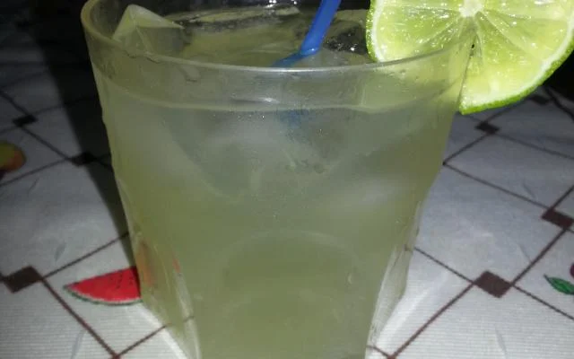

Caipirinha

Descrição:
Descubra agora o segredo da caipirinha original, uma receita clássica que vai transportar você para um sabor
autêntico do Brasil!
Ingredientes:
- 1 limão grande
- 2 colheres de açúcar
- Gelo a gosto
- Cachaça
Modo de preparo:
- Pegue o limão, coloque-o na horizontal e retire as duas pontas, vire-o na vertical e corte-o ao meio, retire
os meios (parte branca) do limão e fatie.
- Coloque o limão fatiado e duas colheres bem cheias de açúcar dentro de um copo próprio para a bebida e com
um socador esprema até que saia todo o suco do limão.
- Coloque pedras de gelo até quase encher o copo (aproximadamente 12 pedras pequenas de gelo) e encha o copo
com a cachaça.
- Mexa bem com uma colher ou coloque em uma coqueteleira e sirva-se!